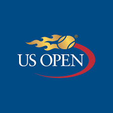
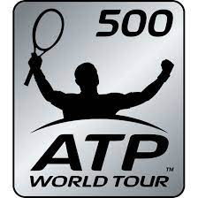

Total de titulos
En Total Ha Ganado 103 Títulos En 157 Finales, Solo Por Detrás De Jimmy Connors, Quien Posee La Marca De
109 Títulos En 161 Finales En La Historia De La ATP.

En cinco veces venció en el Abierto de Estados Unidos (2004, 2005, 2006, 2007 y 2008, récord compartido
en
la era abierta), en dos fue derrotado en la final (2009 y 2015) y en diez llegó a semifinales.
También Es El Tenista Con Más Trofeos En Torneos ATP 500 Con 23 Títulos.